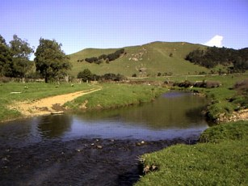
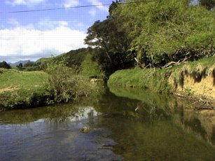

釣行日誌 ＮＺ編
春、西海岸、河口近く
2001/10/01(MON)
西海岸にある小渓流にサンプリングにやって来た。というか、10月１日の解禁日に合わせて、調査のスケジュールをこの川にセットしたのだ。（笑）
橋詰めに車を止め、途中で買ったサンドイッチとジュースをベストの背中に詰める。日増しに力強くなる日差しが頬に痛い。

サンプリングの機材のセッティングを終えてから、いそいそと50メートルほど下流に歩き、曲がり角の淵を見ながら支度を整える。ひょいと見ると、淵の岸寄り、ごく浅いところでブラウンがうろうろと餌を探している。40cmほどで、そう大きくはないが、魚を見ながらでは、さすがに、ガイドにラインを通す手つきが落ち着かない。
この陽気なら、小さめのドライフライに出るだろうとヤマを張り、毎度おなじみのアダムスを結ぶ。一つ下の淵のアタマから、荒瀬の弛みなどをしっかり攻めた後で、40cmの淵にキャストしてみるが、さっきまで浅場に出ていたブラウンからは、うんともすんとも反応がない。
『おかしいなぁ？ 勘づかれたか..........』
しつこく淵の中を流し、淵の流れ込みも探ってはみたものの、何の反応もない。橋までの区間、橋から上の数百メートルの区間、それぞれ絶好のポイントが続いているが、魚影は無い。
トロリトロリと流れる牧場の中の小渓流、河口からわずか２kmほどしか離れていないこの区間には、冬の終わりから春先にかけて遡上してくるホワイトベイトを胃袋一杯に飽食したブラウンが、流れの中にどっしりと定位しているはずなのであるが。
一時間ほど釣り上がり、あまりの反応の無さに徒労感が溢れ、空腹とあいまってイラついて来たのがわかったので、流れ込みに倒木が数本沈んでいる細長い淵のところで、昼ご飯にした。サンドイッチを頬張りつつ、岸辺から慎重に水面を凝視する。倒木の切り株の背後、幹の影の回り、両岸の草むらのエグレなど、絶好のポイントがちりばめられているにもかかわらず、なんの気配もない。
『むむむ。おかしい。 スミスさんの話は本当だったのかなぁ？』
先週の木曜、この川にホワイトベイトの遡上行動調査に訪れたスミスさんの話では、さっきの橋から10分ぐらい歩いただけで、６ポンドクラスを筆頭に良型のブラウンをあちらこちらで見たそうなのだが。
もぐもぐと食べながら睨み続けただけで、その淵には竿を出さず、次のポイントに移ろうと瀬を歩き始めた。と、上手の淵のおしまいのあたりで、本当にかすかな波紋が広がるのが見えた。
淵の尻に、流されてきた灌木の根っこがいくつか沈んでおり、波紋はどうやらその根っこの辺で起こったらしい。

腫れ物にさわるような足取りで、数歩だけ上流に歩み出し、そこで動きを止めて根っこの回りを見つめる。通り過ぎる雲のせいで、時々日が陰る。焦らず、日光が再び照りだして魚を見やすくしてくれるのを待つ。
頭上高くから再び春の日差しが浅い水面を走査し始める。黒い根っこの塊の上流に、青い背中が見えた。
『大きい...........』
黒く見える根っこの塊の上流側、水深わずか30cm足らずの場所に、青い背中と褐色の体側を見せて、ゆらゆらとブラウンが定位している。
時折、流れてくる物体に反応し、ふっと体を動かしたり、虫らしいものを見つけると、もわりと浮上して飲み込んでいる。
釣行日誌ＮＺ編 目次へ
サイトマップ
ホームへ
お問い合わせ